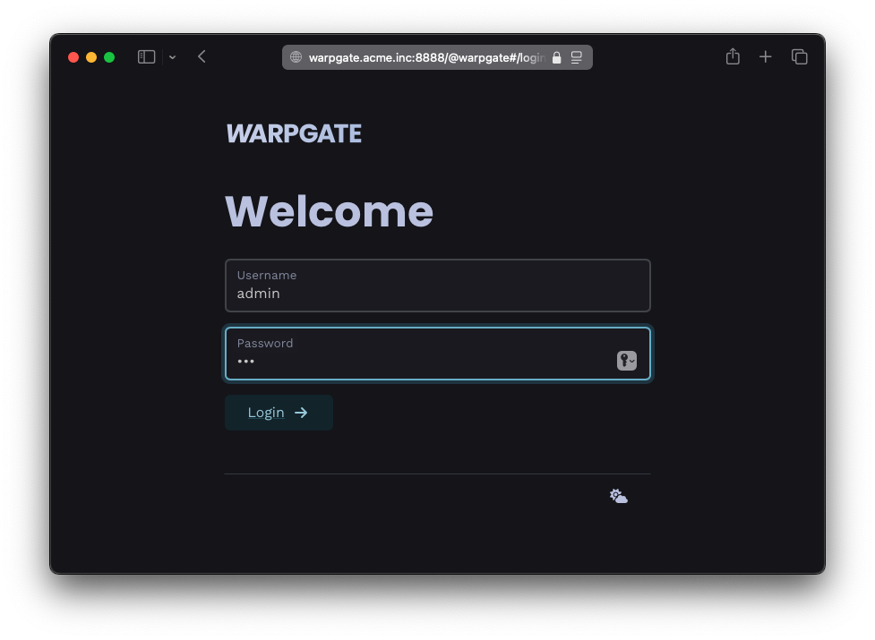
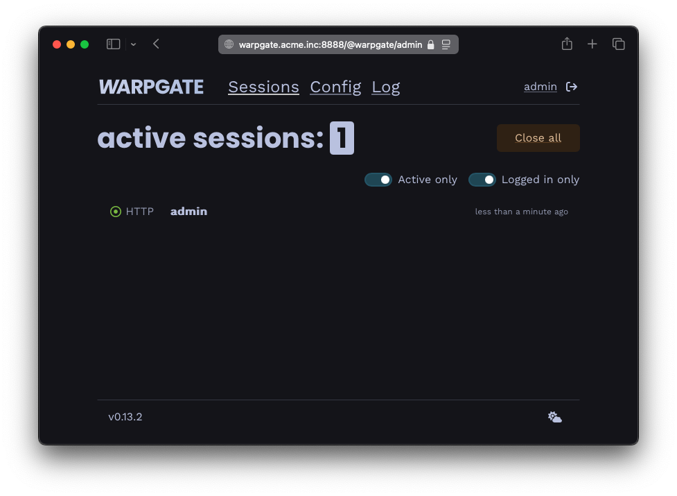

Getting started (binary)§
Note
For Docker / k8s, see Getting started on Docker.
- Download the binary and save it as
/usr/bin/warpgate:- grab a stable/beta release from the Releases page
- or get a nightly build
- Make it executable:
chmod +x /usr/bin/warpgate
Setup§
Run warpgate setup and follow the prompts. If you want to use a non-default (/etc/warpgate.yaml) config path, pass it to all warpgate commands via --config <path>.
To use an external database (MySQL or PostgreSQL) instead of the built-in SQLite, add --database-url mysql://... or --database-url postgres://....
Unattended setup
There's also a non-interactive setup mode available - check out warpgate unattended-setup --help
Here's what it might look like:
$ warpgate setup
13:43:10 INFO Welcome to Warpgate 0.6.0
13:43:10 INFO Let's do some basic setup first.
13:43:10 INFO The new config will be written in /etc/warpgate.yaml.
13:43:10 INFO * Paths can be either absolute or relative to /etc.
✔ Directory to store app data (up to a few MB) in · /var/lib/warpgate
✔ Endpoint to listen for SSH connections on · 0.0.0.0:2222
✔ Endpoint to expose admin web interface on · 0.0.0.0:8888
✔ Do you want to record user sessions? · yes
✔ Set a password for the Warpgate admin user · ********
13:43:28 INFO Generated configuration:
[...]
13:43:28 INFO Saved into /etc/warpgate.yaml
13:43:28 INFO Using config: "/etc/warpgate.yaml" (users: 1, targets: 1, roles: 1)
13:43:28 INFO Generating HTTPS certificate
13:43:28 INFO
13:43:28 INFO Admin user credentials:
13:43:28 INFO * Username: admin
13:43:28 INFO * Password: <your password>
13:43:28 INFO
13:43:28 INFO You can now start Warpgate with:
13:43:28 INFO warpgate --config /etc/warpgate.yaml run
If you need to start over, delete or move away the config file and run warpgate setup again.
You can now start Warpgate with warpgate run and the output should look like this:
$ warpgate run
13:44:13 INFO Warpgate version=0.6.0
13:44:13 INFO Using config: "/etc/warpgate.yaml" (users: 1, targets: 1, roles: 1)
13:44:13 INFO --------------------------------------------
13:44:13 INFO Warpgate is now running.
13:44:13 INFO Accepting SSH connections on 0.0.0.0:2222
13:44:13 INFO Access admin UI on https://0.0.0.0:8888
13:44:13 INFO --------------------------------------------
13:44:13 INFO Listening address=0.0.0.0:2222
13:44:13 INFO Listening address=0.0.0.0:8888
Try accessing https://<host>:8888/@warpgate/admin (note the https://) via a browser to confirm that the Admin UI is functional.
The default username is admin and the password is the one you've set during setup.

Login screen

Session list in the admin UI
Setting up as a service§
On systemd, follow Installing as a systemd service to configure Warpgate to run as a service.